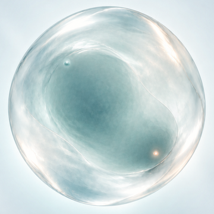
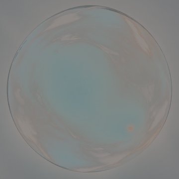

K2 · authored optical field reconstruction
本页验证已锁定 A shell/core 与 B interior 候选能否从独立磁盘字段重新合成。它是固定正面视角的 authored fit，不宣称唯一物理恢复，也不接入 production。
LOADING · verification only · no production
背景：拟合背景 · 强度：0.00 · flow：0.00
本轮只验证一件事
字段重建只能改变 B interior mask 内部；A shell、silhouette、core 和背景外部保持稳定。
0.000
0.000
loading…
字段闸门尚未运行。
字段与对照
 A · shell/core base
A · shell/core base
A+B · endpoint target
signed residual本页不修改 ProductState、formation、deformation、core movement 或 production；不实现 moving，不做 full-frame RGB crossfade。通过只代表 fixed-view authored field fit。